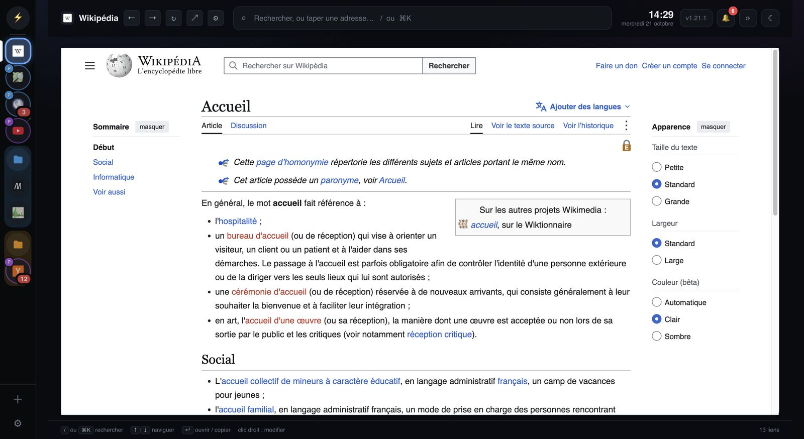
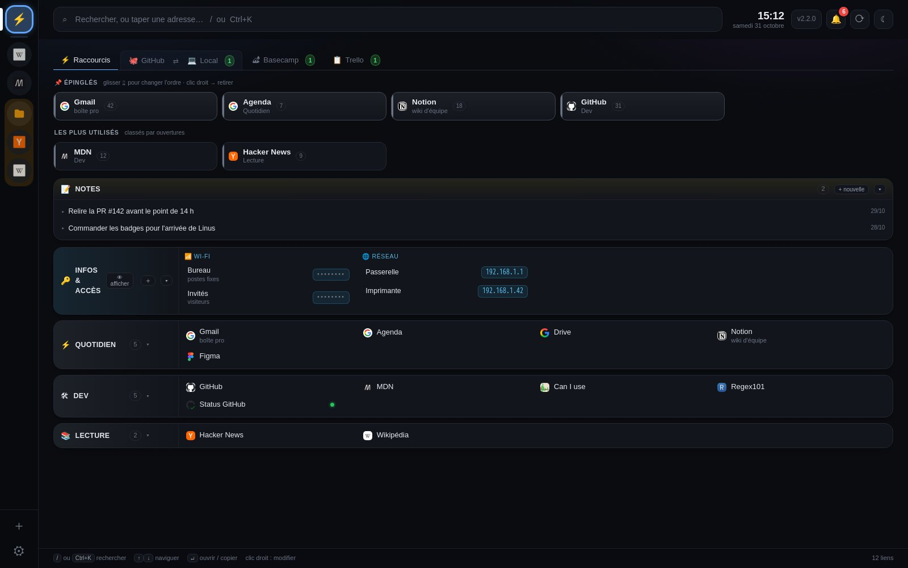
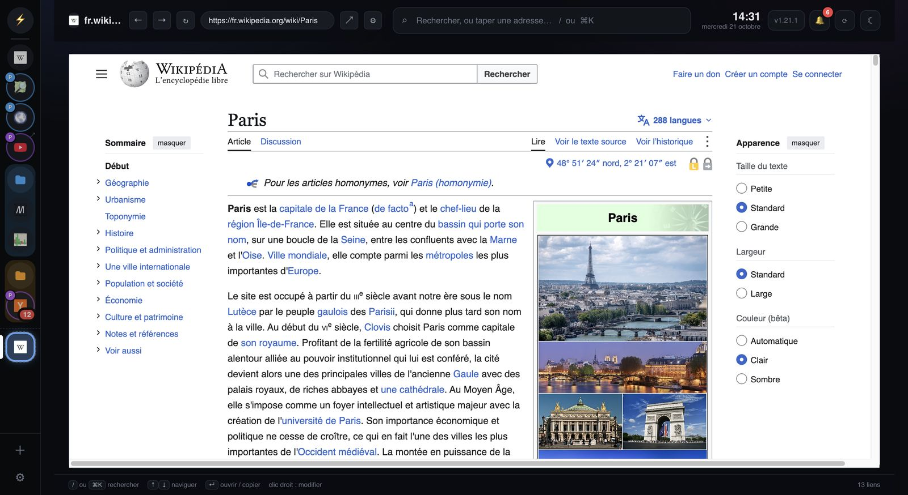
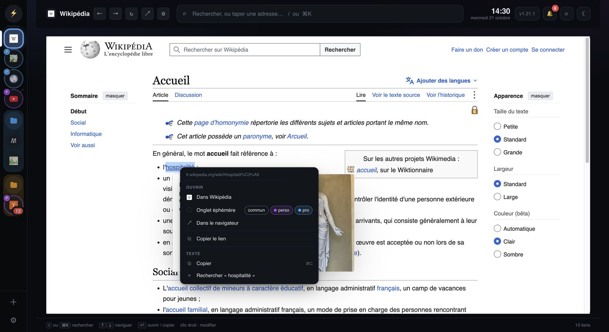
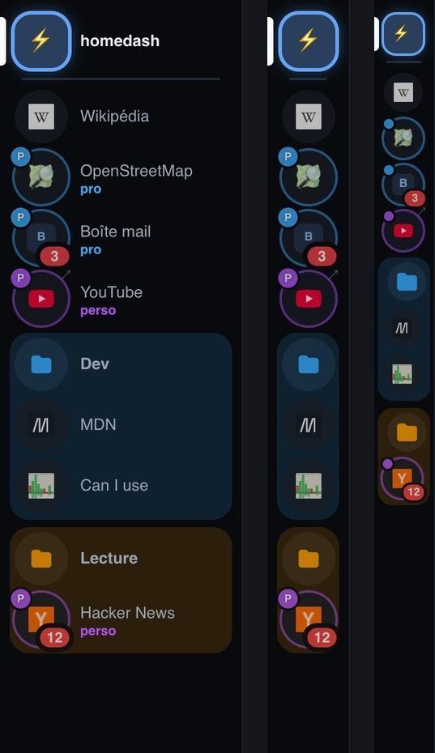
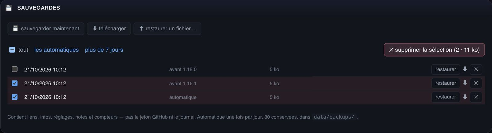
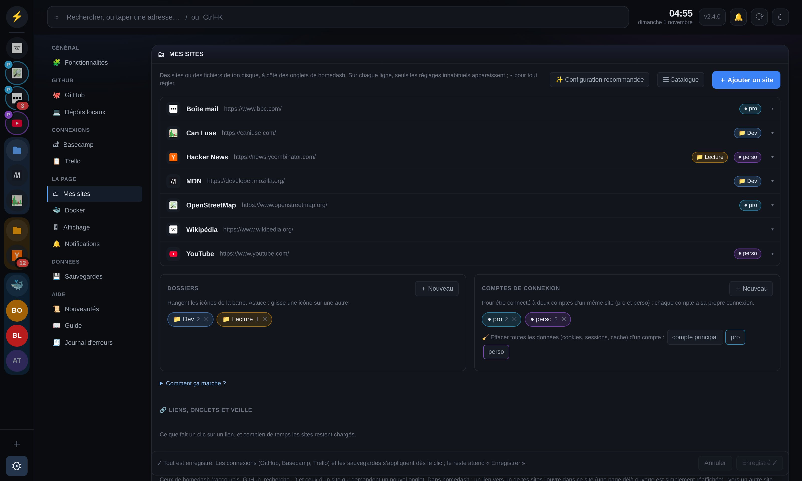

Tes sites, tes liens, tes notes, ton code, tes tâches Basecamp et Trello, côte à côte, avec leurs notifications. Une appli pour Mac et Windows, gratuite.
Télécharger gratuitementPour Mac et Windows · comment installer

Garde ceux qui te servent, coupe les autres dans les réglages.


Un lien s'ouvre à côté, le temps d'une recherche, puis disparaît. Garde-le d'un clic droit s'il te sert.

Ouvrir un lien dans le bon site, avec le bon compte, dans le navigateur, ou le copier.

Dossiers colorés, trois largeurs, plusieurs comptes par site (pro et perso côte à côte).

Chaque jour et avant chaque mise à jour. Change de machine avec un export complet, chiffré.

Aucun fichier à éditer : tes sites, l'affichage, les notifications, en quelques clics.
Pas de compte, pas de pub, rien n'est collecté. Le code est ouvert et l'appli se met à jour toute seule. Confidentialité
Cinq minutes pour l'installer, et ta journée tient dans une fenêtre.
Pour Mac et Windows · comment installer, pas à pas